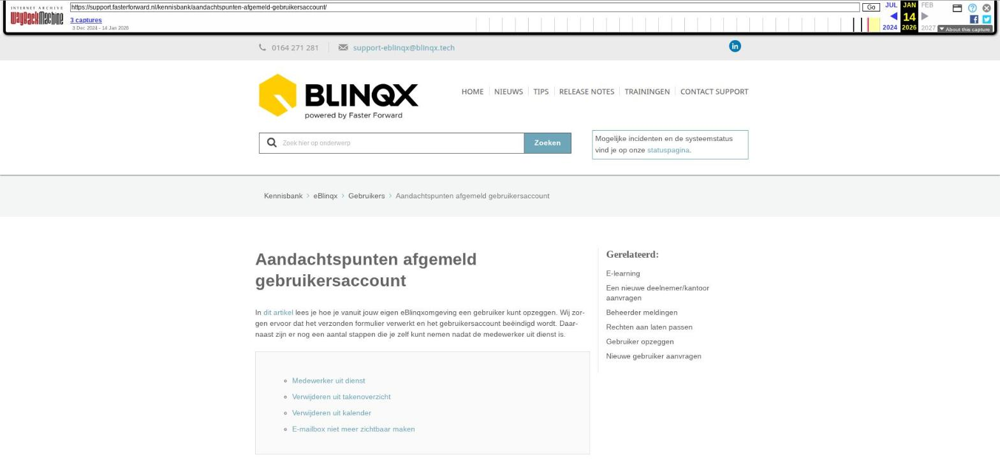

Aandachtspunten afgemeld gebruikersaccount

Tekstinhoud
Aandachtspunten afgemeld gebruikersaccount
In dit artikel lees je hoe je vanuit jouw eigen eBlinqxomgeving een gebruiker kunt opzeggen. Wij zorgen ervoor dat het verzonden formulier verwerkt en het gebruikersaccount beëindigd wordt. Daarnaast zijn er nog een aantal stappen die je zelf kunt nemen nadat de medewerker uit dienst is.
Medewerker uit dienst
Verwijderen uit takenoverzicht
Verwijderen uit kalender
E-mailbox niet meer zichtbaar maken
Medewerker uit dienst
Via Beheer – Organisatie & Personen – eigen organisatie kan je de persoon verwijderen die uit dienst is. Hiervoor klik je eerst achter de oud-collega op het wijzigingsicoon. Hier vul je de indienstdatum en uitdienstdatum in, dan opslaan. Vervolgens klik je op het rode kruisje achter de oud-collega. De oud-collega komt dan onder het kopje 'uit dienst' te staan (let op: je dient hier op te klikken om de personen te kunnen zien die hieronder staan). Wanneer je de persoon hebt verwijderd dan zie je deze persoon bijvoorbeeld niet meer bij 'genodigden' als je een afspraak maakt in de agenda of als adviseur/behandelaar in het dropdownmenu in het product. Let op: voor deze stap moet je de juiste rechten hebben.
Verwijderen uit takenoverzicht
Via 'Taken verantwoordelijke beheer' kan je de oud-collega verwijderen uit de lijst 'persoon' in het zoekveld bij 'Takenoverzicht'.
Verwijderen uit kalender
Via Kalender – hamburgermenu – kalenderrechten kan je personen die gekoppeld zijn aan je kalender verwijderen. Zo ook oud-collega's.
E-mailbox niet meer zichtbaar maken
Bij het afmelden van de collega zetten wij de interval van de e-mailbox uit en verwijderen de oud collega als eigenaar. Ook zetten we zz (oud) voor de e-mailbox. Het kan zijn dat jij nog wel als eigenaar toegevoegd bent aan de e-mailbox, waardoor je de e-mailbox nog terugziet in de e-mailmodule. Indien dit niet gewenst is dan kan je via 'e-mailmanager – betreffende e-mailadres – tabblad eigenaar' jezelf door middel van het rode kruisje verwijderen. Let op: je dient wel de rechten tot de e-mailmanager te hebben.
Laatste update: 28 november 2025
Tagged: collega
Was deze informatie nuttig?
Ja Nee